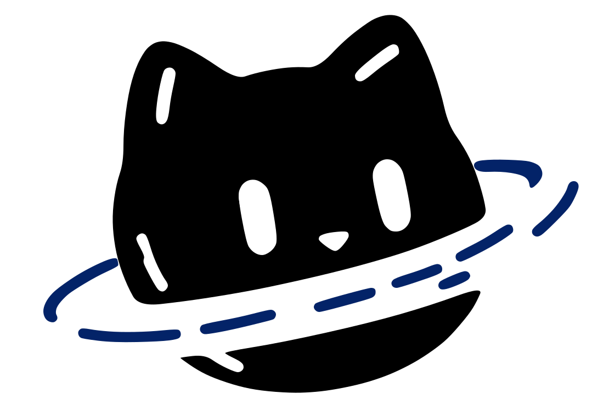
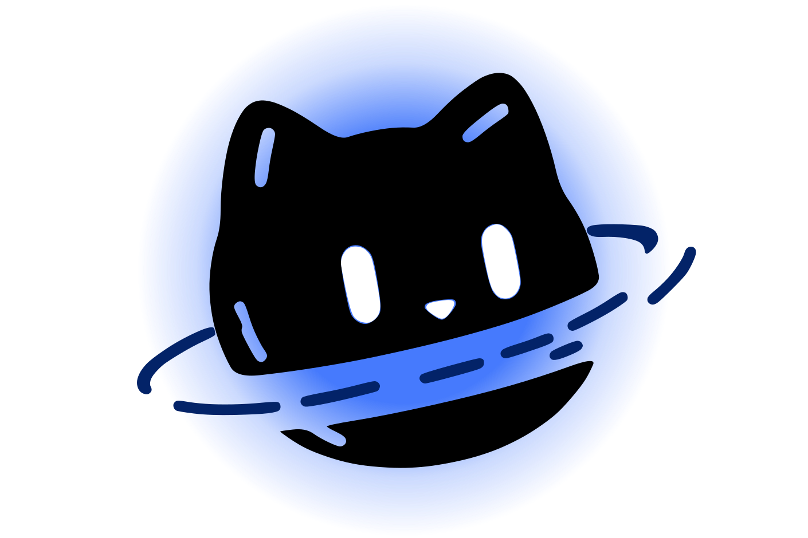
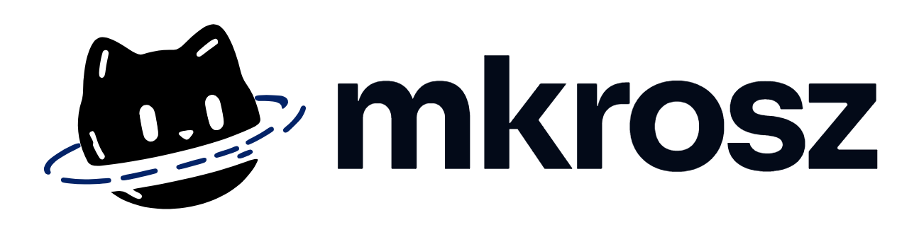
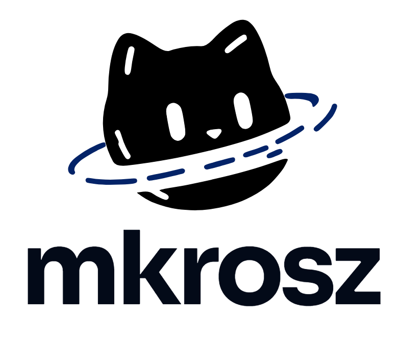
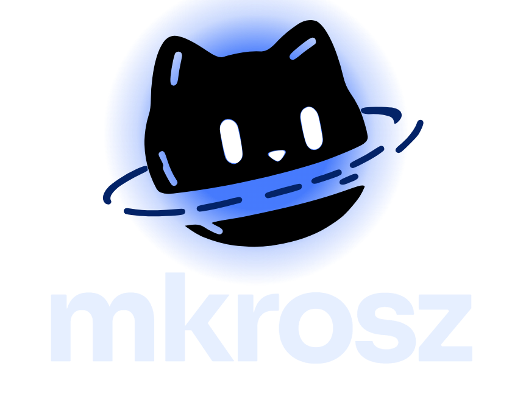

Identidade visual do mkrosz: a marca, e como ela vive no site do portfólio e no painel. Sora Bold como fonte principal (no nome e nos títulos), Fredoka como secundária, e o anel sempre na cor do fundo: ele se mistura com o que está atrás, sobram só os tracinhos marinho e o gato parece "recortado" pelo anel — o que lembra o buraco negro. No escuro, no lugar do contorno branco, entra um brilho azul suave atrás do gato, como a luz em volta de um buraco negro.
No escuro, o gato preto ganha um brilho azul por trás (sem linha branca). O anel continua na cor do fundo, então ele aparece como uma faixa escura cortando a luz — bem buraco negro.
No tema claro do site o buraco negro vira um buraco branco, e o gato acompanha: fica branco, com o rosto azul-marinho, os tracinhos do anel em ciano e uma coroa ciano por trás (a mesma luz do buraco branco). A versão principal tem o anel branco e é a usada no login, no hero e no 404. A alternativa mantém a regra da marca de o anel sumir no fundo; fica como opção para peças em que o gato precise "recortar" o fundo.
Arquivos com fundo transparente. O anel e as marquinhas das orelhas ficam vazados: o que estiver atrás aparece por eles, então o anel sempre se mistura com o fundo, em qualquer lugar. O xadrez é só para mostrar a transparência.






Sora Bold no nome e nos títulos: geométrica e firme, a mesma família do site. Nos textos corridos, a Sora Regular.
Fredoka como fonte secundária: subtítulos, rótulos, selos e chamadas mais leves. Arredondada e amigável, traz o jeito redondo do gato.
IDV do site do portfólioComo a marca vive no site: cores, tipografia, componentes e o visual de buraco negro.
As cores de fundo, texto e destaque são as padrão: dá para trocar no painel em Cores & tema. O topo do site (hero) e a página 404 são sempre o espaço escuro, nos dois temas.
Títulos e textos usam a fonte do sistema (leve, sem download). A Instrument Serif itálica aparece em destaques, como na faixa de habilidades. Na marca: Sora Bold (principal) e Fredoka (secundária).
Formas: tudo em pílula (botões, selos, barra, paginação) e cantos grandes nos cards (28px). Movimento suave com a curva cubic-bezier(.22, 1, .36, 1); o tema do site é o espaço — buraco negro, estrelas, letras puxadas pela gravidade do cursor.
IDV do painel administrativoA mesma identidade, em versão simples: sem efeitos de experiência, superfícies chapadas e foco no trabalho.
Mesmas cores e fontes do site. O item selecionado é sempre claro com texto escuro (como o ícone ativo da barra do site); o azul de destaque fica para ações e o interruptor ligado. Status: amarelo = rascunho, cinza = offline, vermelho ao passar o mouse em excluir. Login e 404 usam o vidro translúcido sobre o buraco negro.